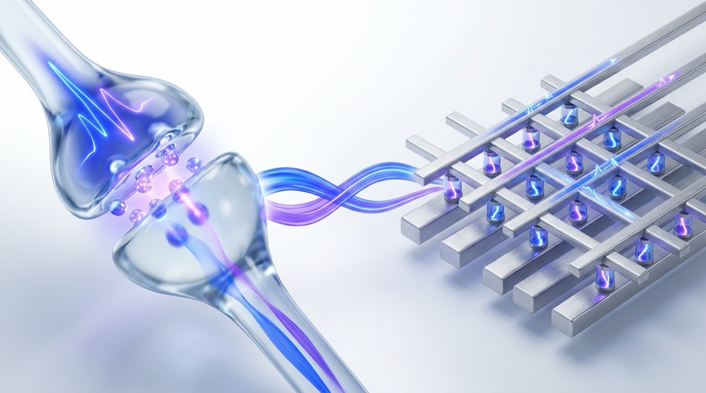

Neuromorphic Devices
Brain-inspired artificial synapses that compute and remember in the same place.

Why It Matters
Conventional computers shuttle massive amounts of data back and forth between separate memory and processor units, wasting huge energy during AI workloads. The human brain avoids this bottleneck by processing and storing information together inside synapses using only ~20 watts. Neuromorphic devices recreate this architecture in hardware.
ONE 1ab Research Focus
- 2D-material-based synaptic transistors, floating-gate memories, and memristors
- Linear, symmetric weight updates with ultra-low energy per synaptic event
- Hardware neural network simulation for pattern recognition and edge learning
How It Works
- Analog Synaptic Weight: Instead of only 0 and 1, a synaptic transistor or memristor smoothly tunes its conductance to store multi-level weights.
- Learning Rules in Hardware: Electrical or optical pulses reproduce short-term/long-term plasticity (STP/LTP) and spike-timing-dependent plasticity (STDP).
- In-Memory Computing: Organizing devices into crossbar arrays performs parallel matrix-vector multiplication directly inside memory with minimal energy.
Real-World Applications
Energy-Efficient AI Chips
Orders-of-magnitude lower power for deep learning inference
Autonomous Edge Vision
Real-time recognition on drones, robots, and smart cameras
Adaptive Smart Sensors
Sensors that learn and filter signals right at the source